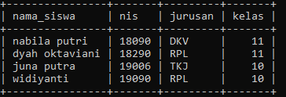

DML merupakan singkatan dari ….
a. Data Modeling Language
b. Data Manipulation Language
c. Data Manipulate Language
d. Data Model Language
e. Data Many Language
Jawaban B
Kepanjangan dari DML adalah Data Manipulation Language
Yang termasuk ke dalam perintah DML adalah ...
a. Select
b. Alter
c. Create
d. Drop
e. Show
Jawaban A
Yang termasuk dalam kelompok perintah DML adalah Insert, Select, Update, Delete
Jika ingin merubah record atau data pada tabel dapat menggunakan perintah …
a. Edit
b. Insert
c. Update
d. Delete
e. Select
Jawaban C
Perintah Update digunakan untuk mengubah atau mengedit data pada tabel
Jika ingin menghapus record atau data pada tabel dapat menggunakan perintah …
a. Edit
b. Insert
c. Update
d. Delete
e. Select
Jawaban D
Perintah Delete digunakan untuk menghapus data pada tabel
Berikut perintah sql yang benar untuk menambah data pelanggan adalah ...
a. Insert pelanggan values (‘Smith’,’101’,’Surabaya’);
b. Insert into pelanggan values (Smith, 101,Surabaya);
c. Insert (Smith, 101,Surabaya) into pelanggan;
d. Insert values pelanggan into (‘Smith’, 101,Surabaya);
e. Insert into pelanggan values (‘Smith’,’101’,’Surabaya’);
Jawaban E
Bentuk umum untuk menambah data pada suatu tabel adalah :
Insert into nama_table values ( 'nilai1', 'nilai2');
sehingga perintah untuk menambah data pada tabel adalah Insert into pelanggan values (‘Smith’,’101’,’Surabaya’);
Perintah yang digunakan untuk menambah data pada tabel siswa dengan id siswa = 19 dan nama siswa = Aline adalah...
a. Insert into siswa nama siswa=’Aline’, id siswa=’19’;
b. Insert into siswa (nama siswa)(id siswa) values (‘Aline’,’19’);
c. Insert into siswa values (Aline,19);
d. Insert into siswa (nama_siswa,id_siswa) values (‘Aline’,’19’);
e. Insert into siswa (nama_siswa)(id_siswa) value (‘Aline’,’19’);
Jawaban D
Bentuk umum untuk menambah data pada suatu tabel adalah :
Insert into nama_table (field1,field2) values ( 'nilai1', 'nilai2');
sehingga perintah untuk menambah data pada tabel siswa adalah Insert into siswa (nama_siswa,id_siswa) values (‘Aline’,’19’);
7. Descending adalah pengurutan data yang berawal dari data yang lebih besar nilainya ke yang lebih kecil. Contoh bentuk penulisan sintaks yang menggunakan descending yang benar adalah…
a. show tables penjualan DESC;
b. SELECT * FROM penjualan ORDER BY nama DESC;
c. SELECT * DESC penjualan;
d. DESC penjualan;
e. SELECT nama, alamat, jenis_kel FROM penjualan DESC;
Jawaban B
Perintah sql yang menggunakan descending adalah perintah Select,
sehingga perintahnya SELECT * FROM penjualan ORDER BY nama DESC;
Jika data tabel siswa hanya menampilkan nama dan nomor telepon, bagaimana penulisan yang benar
a. Select nama_siswa, tlp_siswa from siswa;
b. Select id_siswa, tlp_siswa from siswa;
c. Select nama_siswa, tlp from siswa;
d. Select namasiswa, tlpsiswa from siswa
e. Select nama_siswa, tlp from tb_siswa
Jawaban A
Untuk menampilkan field tertentu dapat menggunakan perintah SELECT field1,field2 FROM nama_tabel; ,
sehingga untuk menampilkan hanya nama dan nomor telepon maka perintahnya Select nama_siswa, tlp_siswa from siswa;
Perhatikan tabel siswa dibawah !

Siswa dengan nama ‘Juna’ dikeluarkan oleh pihak sekolah, sehingga dihapus dari data siswa. Perintah yang tepat untuk menghapus datanya adalah …
a. Delete from siswa nama_siswa where = 'junaa';
b. Delete from siswa;
c. Delete from siswa where nama_siswa = ‘juna putra’;
d. Delete from siswa nama siswa where juna;
e. Delete from siswa where nama siswa = ‘juna’
Jawaban C
Untuk menghapus data pada tabel dapat menggunakan perintah Delete from nama_tabel where; ,
sehingga untuk menghapus data siswa yang bernama juna menggunakan perintah sql Delete from siswa where nama_siswa = ‘juna putra’ ;
Jika ingin merubah nama siswa widiyanti menjadi widi maka perintah yang tepat untuk merubah data siswa adalah (mengacu gambar no 9) …
a. Update siswa set nis = ‘19090’ where nama_siswa = ‘ widi’;
b. Update siswa nama_siswa = ‘widiyanti’ where nama_siswa = ‘widi’;
c. Update siswa set nama_siswa = ‘widiyanti’ where nama_siswa = ‘widi’;
d. Update siswa set nama_siswa = ‘widi’ where jurusan = ‘RPL’;
e. Update siswa set nama_siswa = ‘widi’ where kelas = ‘11’;
Jawaban D
Untuk mengedit atau mengubah data pada tabel menggunakan perintah update sehingga
untuk mengubah nama widiyanti menjadi widi perintah sqlnya Update siswa set nama_siswa = ‘widi’ where jurusan = ‘RPL’;